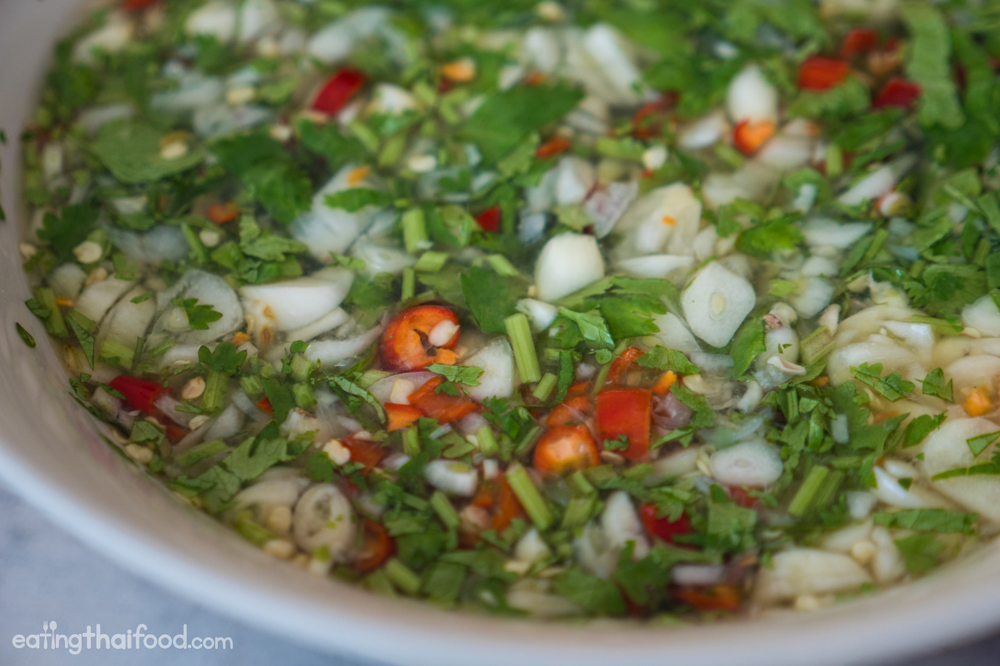
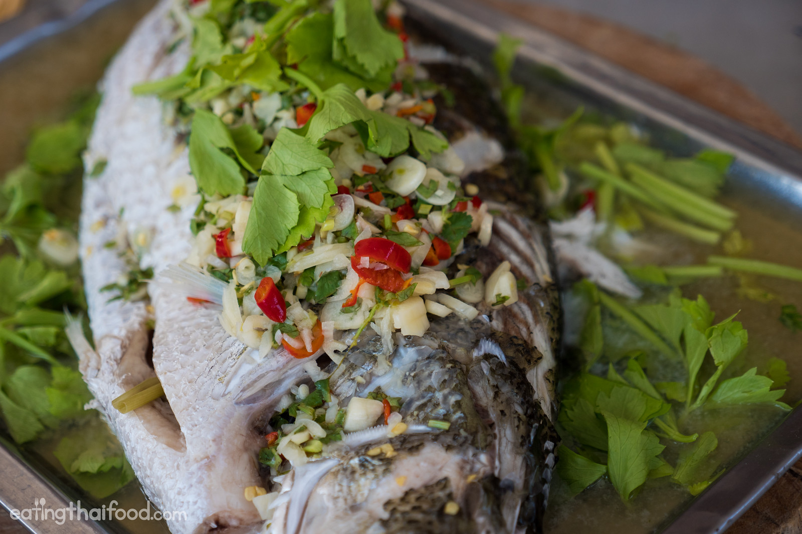

Thai Steamed Lime Fish Recipe
Ingredients
- 1 cup good chicken stock or fish stock (fresh or canned)
- 2 Tbsp finely chopped palm sugar
- 8 Tbsp lime juice
- 6 Tbsp fish sauce (here's my preferred fish sauce)
- 2 heads of garlic, chopped
- Thai chilies to taste, finely chopped
- 20 - 25 sprigs cilantro, chopped
- 1- 2 stalks Chinese celery, cut into 1-inch pieces
Methods
Make sure your fish is scaled and gutted, which you can either do yourself, or have the butcher do before hand.
Next to prepare the fish, make three score cuts all the way through the fillet of the fish, down to the bone, perpendicular
on both sides of the fish. This will help the fish to cook faster and also ensure that more flavor gets down into the meat of the fish.

Steaming the fish
Using a steamer device, or whatever you can come up with – Pai and I used my mother in laws big sized old wok – you’ll need to place some water in the bottom, elevate the fish on a plate above the water, and still have enough space to place a cover over the pan or wok to seal in all that steam.
The lime, chili, garlic sauce
For the next part of this recipe, we’re going to make the sauce. And keep in mind that you can make the sauce while the fish is steaming so that both parts of the
dish are ready to assemble at the same time.
In a saucepan, bring the chicken stock to a quick boil, then toss in the palm sugar, and stir until dissolved. That’s it for the cooking. Turn off the heat, and then pour the broth into a mixing bowl.
Dice the chilies and then set both the garlic and chilies aside.
Come back over to the bowl of chicken stock and dissolved palm sugar, and add in the fish sauce, freshly squeezed lime juice, chopped cilantro, and then toss in the minced garlic and chilies, and mix around carefully.
Make sure you taste test the sauce, it should be sour enough to make you close your eyes, and balanced out by the sweetness of the palm sugar. Add more sugar, lime juice, or fish sauce as needed.
Assembling the fish and sauce
The final process of cooking pla kapong neung manao (ปลากะพงนึ่งมะนาว) is to assemble all the fish and the soup.
Pai recommends tearing off some leaves of Chinese celery to garnish the bottom of the fish. Our fish was so big that we had to use a metal serving tray, which worked out quite perfectly.
